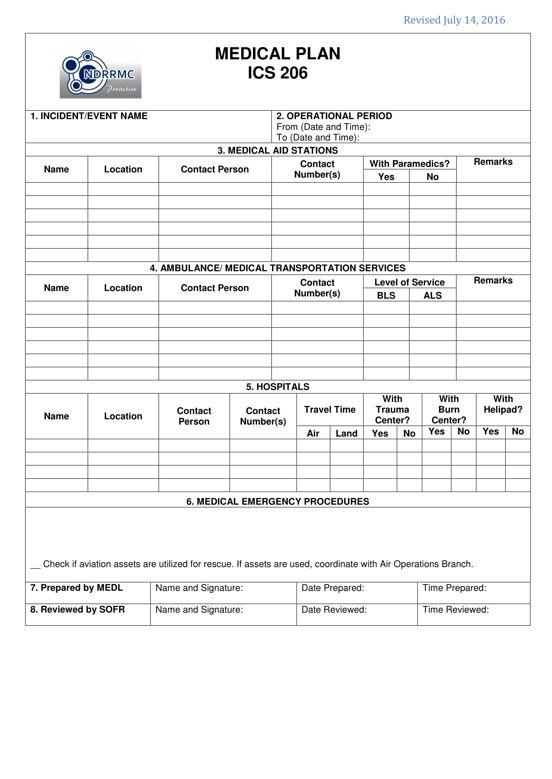

PURPOSE: The ICS 206 provides information on incident medical aid stations, transportation services, hospitals, and medical procedures primarily intended for the responders.
PREPARATION: The ICS 206 is prepared by the Medical Unit Leader (MEDL) and reviewed by the Safety Officer (SOFR).
DISTRIBUTION: The ICS 206 is duplicated and attached to the ICS 202 and given to all recipients as part of the Incident Action Plan (IAP). All completed original forms must be given to the Documentation Unit.

BLOCK NO. |
BLOCK TITLE |
INSTRUCTIONS |
| 1 | Incident / Event Name | Enter the name assigned to the incident / event. |
| 2 | Operational Period | Enter the start date (mm-dd-yyyy) and time (24 hour format) and end date and time for the operational period to which the form applies. |
| 3 | Medical Aid Stations | Enter the relevant information on the incident /field medical aid station(s). Indicate the name, location, contact person and contact number(s). Also specify whether or not paramedics are provided. |
| 4 | Ambulance/Medical Transportation Services | Enter the relevant information on the ambulance/medical transportation service(s). Indicate the name, location, contact person and contact number(s). Also specify the level of service if Basic Life Support (BLS) or Advance Life Support (ALS). |
| 5 | Hospitals | Enter the relevant information on the hospital(s). Indicate the name, location, contact person and contact number(s). Also specify the travel time going to the hospital. Further, indicate if there are trauma center, burn center, and/or helipad. |
| 6 | Medical Emergency Procedures | Enter any special emergency instructions for use by incident personnel including (1) who should be contacted, (2) how should they be contacted, and (3) who manages an incident within an incident due to a rescue, accident, etc. Include procedures for reporting medical emergencies. |
| 7 | Prepared by MEDL | Enter complete name of the MEDL, signature, date (mm-dd-yyyy), and time (24 hour format) the form was prepared and completed. |
| 8 | Reviewed by SOFR | Enter complete name of the SOFR, signature, date (mm-dd-yyyy), and time (24 hour format) the form was reviewed. |